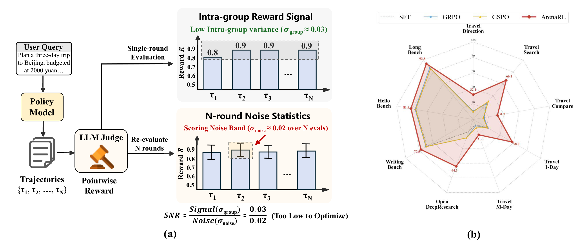
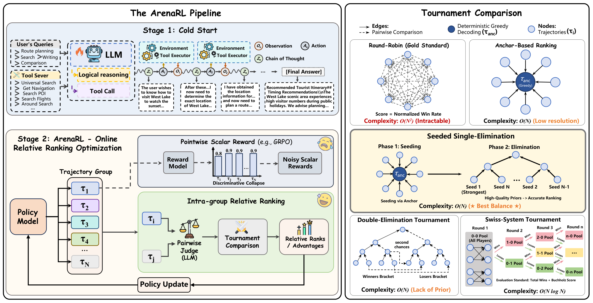
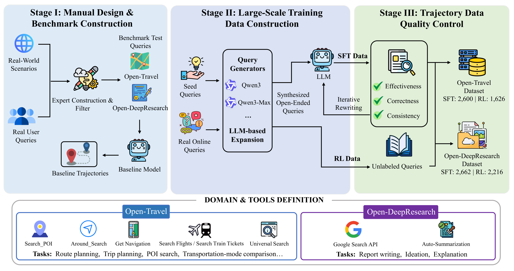
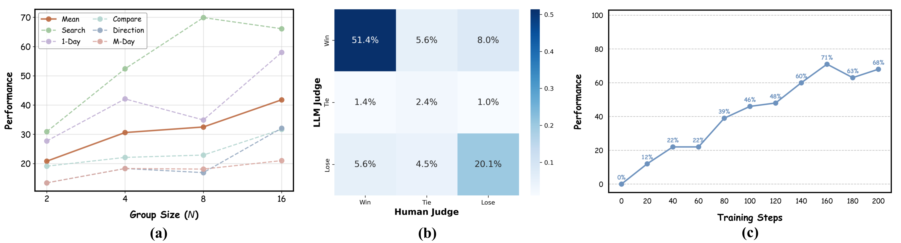

ArenaRL：用锦标赛式（tournament）组内相对排名为 open-ended agent 扩展 RL
ArenaRL: Scaling RL for Open-Ended Agents via Tournament-based Relative Ranking
①开源贡献 Open-source Artifacts
本文开源了训练框架代码（GitHub Alibaba-NLP/qqr，Apache-2.0）与两个 benchmark 数据集（Open-Travel、Open-DeepResearch，发布在 Hugging Face 的 Alibaba-NLP/arenarl collection；Open-Travel 另有 ModelScope 镜像）。代码内置了论文里全部五种 tournament 拓扑，作为 slime RL 框架的轻量、非侵入式扩展，并接入了 MCP（Model Context Protocol）工具标准。模型权重未发布（collection 中只有数据集与论文，没有 checkpoint）。下表均为解读日实际核实的结果。
| 类型 | 是否开源 | 内容 / 链接 |
|---|---|---|
| 代码 Code | ✔ | github.com/Alibaba-NLP/qqr（亦名 "hilichurl"，Apache-2.0）。"An RL training framework for open-ended agents"，核心算法全实现，含 Anchor-Based / Round-Robin / Swiss-System / Double-Elimination / Seeded Single-Elimination 五种拓扑；作为 slime 的扩展，集成 MCP；提供 scripts/travel/run-qwen3-8B.sh 等快速启动脚本。Python 88% / Shell 12%。 |
| 模型权重 Weights | ✘ | 未发布。论文主干模型为 Qwen3-8B-Base，经 SFT→RL 得到 ArenaRL 模型，但 HF collection 中未提供 checkpoint。 |
| 数据集 Dataset | ✔ | HF collection Alibaba-NLP/arenarl 内含 Open-Travel（SFT 2,600 / RL 1,626 / 测试 250，中文，旅行规划）与 Open-DeepResearch（SFT 2,662 / RL 2,216 / 测试 100，中/英，通用 deep research）；Open-Travel 另见 ModelScope iic/Open-Travel。两者均为「SFT→RL→多维自动评测」的完整流水线 benchmark。 |
| 环境 / Benchmark | ✔ | Open-Travel 工具基于高德开放平台 Web service API（search poi / around search / get navigation）+ 百炼 WebSearch；Open-DeepResearch 用 Google Search API + 自动摘要。评测 harness 随代码与数据一起给出。另外在 WritingBench / HelloBench / LongBench-write 三个公开写作 benchmark 上扩展评测（这三个为他人工作）。 |
| 项目主页 / Demo | — | 无独立项目主页；信息集中在 GitHub README 与 HF collection。 |
注注意 arXiv 编号为 2601.06487（2026 年 1 月）。论文为 Technical Report 体例，无标准会议/期刊 venue。模型权重「未见发布」属事实陈述，后续 Alibaba-NLP 是否补放 checkpoint 需以官方仓库为准。
②研究动机与贡献 Motivation & Contribution
背景与问题：pointwise scalar reward 的 discriminative collapse
RL 已经在有可验证结果的任务（数学、代码）上大幅提升了 LLM agent 的能力——这类任务有 ground-truth，rule-based reward 能给出明确信号，GRPO、DAPO 等算法因此成功。但很多真正重要的现实任务是 open-ended 的：个性化旅行规划、深度行业分析、开放写作……它们的解空间巨大、非结构化，「对不对」本身是主观、多维的（推理是否严谨、是否满足个性化约束、方案是否实用），传统基于 ground-truth 的 RL 根本用不上。
为了拿到 reward，目前主流做法是 LLM-as-Judge：让一个强模型给每条 trajectory 的最终答案打一个 pointwise scalar score。作者指出这套机制有一个内在的致命缺陷，他们命名为 discriminative collapse（判别坍缩）：
- 组内方差消失。随着 policy 被不断优化，同一个 query 采样出的一组 trajectory $\{\tau_i\}$ 在分布上越来越接近、质量都很高，judge 给出的分数被压缩到很窄的区间（例如满分 1 的尺度上挤在 0.8–0.9），彼此几乎不可区分（$\sigma_{\text{group}}\to 0$）。
- judge 自身有噪声。LLM judge 的打分受 decoding 随机性、length preference 等 spurious correlation 影响，存在不可忽略的评测噪声 $\sigma_{\text{noise}}$。作者在 Figure 1(a) 中实测：单轮组内信号 $\sigma_{\text{group}}\approx 0.03$，而 N 轮重复评测的打分噪声带 $\sigma_{\text{noise}}\approx 0.02$，两者量级相当。
- 信噪比太低无法优化。于是有效信噪比 $\text{SNR}=\sigma_{\text{group}}/\sigma_{\text{noise}}\approx 0.03/0.02$，低到优化几乎被 reward model 的噪声主导。更糟的是 GRPO 这类算法的 advantage 是 $A_i=(\hat R_i-\mu)/\sigma$，当 $\sigma_{\text{group}}$ 趋零时，分母上的归一化反而会把这股漂移噪声放大成主导梯度，导致优化停滞甚至退化。

本文的切入点
作者从 decision theory（决策理论）借来一个早有共识的观察：pairwise preference（两两偏好）判断，比 pointwise 的定量打分更稳定（Fürnkranz & Hüllermeier 2010；DPO 的 Rafailov et al. 2023 也是同源思想）。既然「绝对打分」在高质量、相似 trajectory 之间会坍缩，那就不要绝对分，改为在组内构造相对排名（relative ranking）——只要能稳定地判断"A 比 B 好"，就能恢复出可优化的 advantage 信号。这就是 ArenaRL（Arena = 竞技场）名字的由来：为每一组 rollout 现场搭一个对抗"竞技场"。
但要把 pairwise 偏好优化扩展到 long-horizon 的 agent 任务，最大瓶颈是算力：穷举两两比较（round-robin）虽然给出最准的排名，但复杂度 $\mathcal{O}(N^2)$ 对在线训练不可承受。本文的另一半工作就是系统地研究 tournament topology（锦标赛拓扑），在排名保真度与采样效率之间找最优点。
核心贡献
- 形式化 discriminative collapse，并提出 ArenaRL 范式。识别并量化了 open-ended 任务中 pointwise scalar reward 的判别坍缩问题，提出用锦标赛式的组内相对排名替代不稳定的标量 reward，从而恢复可优化的 advantage 信号；并设计了一个 process-aware pairwise evaluation——judge 不只比最终答案，还审查 chain-of-thought 的逻辑一致性与 tool 调用的精确性。
- 提出 seeded single-elimination 拓扑，把 $\mathcal{O}(N^2)$ 降到 $\mathcal{O}(N)$。针对标准单/双败淘汰对初始配对极度敏感（随机配对会让高质量 trajectory 提前相遇被淘汰）的痛点，创新性地用 greedy decoding 的 trajectory 作 "quality anchor" 先做低偏差预排序（种子），再建二叉树对阵；线性复杂度下，advantage 估计精度几乎等于 round-robin 上界。
- 构建 Open-Travel 与 Open-DeepResearch 两个带完整训练流水线的 benchmark。不同于只给测试集的静态 benchmark，这两个套件提供 SFT→RL→多维自动评测的完整闭环，填补了 open-ended agent「全生命周期」评测基础设施的空白；并在真实高德（Amap）业务数据上验证了落地价值。
③方法 Method
整体看，ArenaRL 是一个落在「对抗竞技场」框架里的在线 policy optimization 方法，分两阶段（Figure 2 左）：Stage 1 Cold Start——用 SFT 让 base 模型先学会基本的 tool-call 格式与多步推理；Stage 2 在线相对排名优化——对当前 policy $\pi_\theta$ 采样出的一组 trajectory $\mathcal{G}=\{\tau_1,\dots,\tau_N\}$，不走 reward model 打标量分那条（那条会 discriminative collapse），而是经「pairwise judge → tournament → relative ranks/advantages → policy update」这条相对排名通路。Figure 2 右半部分系统对比了五种 tournament 拓扑及其复杂度。

3.1 任务与 RL 目标
把 open-ended agent 任务形式化为条件 trajectory 生成问题。给定工具集 $T$ 和从任务分布 $\mathcal{D}$ 采样的 query $x$，agent policy $\pi_\theta$ 生成一条多步交互 trajectory $\tau$，它是 chain-of-thought $z_k$、tool 调用 $a_k\in T$、环境反馈 $o_k$ 与最终答案 $y$ 交错的序列：
$$\tau = [\,z_1,a_1,o_1,\dots,z_k,a_k,o_k,\dots,z_K,a_K,o_K,\,y\,]$$
RL 的优化目标是在对齐 reward 信号的同时，用 KL 约束防止 policy 偏离参考模型太远：
$$\mathcal{L}(\theta)=\mathbb{E}_{x\sim\mathcal{D},\,\tau\sim\pi_\theta(\cdot\,|\,x;T)}\Big[\,r_\phi(x,\tau)-\beta\,\mathbb{D}_{\mathrm{KL}}\big(\pi_\theta(\cdot|x)\,\|\,\pi_{\text{ref}}(\cdot|x)\big)\,\Big]$$
其中 $r_\phi(x,\tau)$ 是 trajectory 质量的 reward，$\pi_{\text{ref}}$ 是 reference policy，$\beta$ 控制 KL 正则强度。问题就出在 $r_\phi$ 怎么来：open-ended 任务没有可验证的 $R^*$，只能让 LLM judge 把观测分 $\hat R(\tau)$ 当作真效用 $R^*(\tau)$ 加噪声 $\epsilon$——这正是 discriminative collapse 的来源（见 §②）。
3.2 process-aware pairwise evaluation（Arena Judge）
ArenaRL 用一个 Arena Judge $\mathcal{J}$ 取代标量 reward model。给 query $x$ 和两条候选 $\tau_a,\tau_b$，$\mathcal{J}$ 联合评估并对每条分别输出一个质量分。输入有三部分：(1) query $x$；(2) 两条 trajectory 的核心 context $\tau_i,\tau_j$（含每步的 CoT $z_k$、tool 调用 $a_k$ 与最终答案 $y$）；(3) 一份 process-aware rubric $u$——它强制细粒度审查 CoT 的逻辑一致性、tool call 的精确性、以及最终答案的可靠性。这保证优化信号奖励的是 agent 真正的推理能力，而不是过拟合到答案的表层特征。
为了消除 LLM judge 的位置偏置（positional bias），采用双向打分：交换两条 trajectory 的呈现顺序各评一次再相加：
$$(s_i,s_j)=\mathcal{J}(x,\tau_i,\tau_j,u)+\mathcal{J}(x,\tau_j,\tau_i,u)$$
$s_i,s_j$ 即双向 pairwise 评测下给 $\tau_i,\tau_j$ 的质量分，消掉偏向第一/第二位的 bias。
3.3 五种 tournament 拓扑：从 gold standard 到线性近似
有了「能稳定比 A 和 B」的 $\mathcal{J}$，剩下的问题是怎么用尽量少的 pairwise 比较，把一组 $N$ 条 trajectory 排出可靠的名次。作者实现并对比了五种拓扑：
- Round-Robin（循环赛，gold standard）。每条 $\tau_i$ 与其余 $N-1$ 条都比一遍，得分为归一化胜率 $$\text{Score}(\tau_i)=\frac{1}{N-1}\sum_{j\neq i}\mathbb{I}(s_i>s_j)$$ 无偏但 $\mathcal{O}(N^2)$，仅用作衡量其它拓扑保真度的"上界基准"。
- Anchor-Based Ranking（锚点排名）。先用 greedy decoding（Temperature=0）生成一条确定性参考 trajectory 作 quality anchor $\tau_{anc}$；其余 $N-1$ 条用高熵采样（Temperature≈0.8）保证探索多样性，再各自只和 anchor 比一次。复杂度 $\mathcal{O}(N)$，但分辨率低：只衡量了"比 anchor 好多少"，捕捉不到两条探索 trajectory 之间的细微差别。
- Seeded Single-Elimination（带种子的单败淘汰，本文主推）。两阶段混合：(1) Seeding——先用 anchor-based 机制给每条算一个初步分，据此排出低偏差的种子序 $s^i_{\text{seed}}$；(2) Elimination——按种子建二叉对阵树（最高种子 vs 最低种子，seed 1 vs seed N），每场胜者 $\tau_{\text{win}}=\arg\max_{\tau\in\tau_i,\tau_j}(s_i,s_j)$ 晋级、败者淘汰。最终名次主要由在淘汰树中存活的深度决定；同一轮被淘汰的（如都止步四分之一决赛）再用历史累计平均分在同层内细排。复杂度线性：seeding 需 $N-1$ 次、tournament 需 $N-1$ 次比较。关键在于用 seeding 阶段的高质量先验来引导对阵结构，避免强者内耗。
- Double-Elimination（双败淘汰）。引入败者组，一条 trajectory 输两次才淘汰，原则上对偶然爆冷更鲁棒；为把预算控制在 ≈$2N$ 次比较，它用随机种子而非 anchor 初始化——结果正因缺了高质量初始种子，保真度反而不如 seeded single-elimination。
- Swiss-System（瑞士制）。非淘汰、动态配对：每轮让胜负记录相同的 trajectory 互相对阵（如 "1–0" 打 "1–0"），固定打 $K\approx\log_2 N$ 轮、每轮 $N/2$ 场，最终用总胜场 + Buchholz 分（对手过往胜场之和）排名。复杂度 $\mathcal{O}(N\log N)$。
3.4 ranking → advantage：把离散名次变成稳定优化信号
不管用哪种拓扑，最终都为组内每条 trajectory 产出一个相对名次 $\text{Rank}(\tau_i)\in\{0,\dots,N-1\}$（0 为最高）。先把离散名次映射成分位数式 reward：
$$r_i = 1-\frac{\text{Rank}(\tau_i)}{N-1}$$
再在组内做标准化得到 advantage：
$$A_i=\frac{r_i-\mu_r}{\sigma_r+\epsilon}$$
其中 $\mu_r,\sigma_r$ 是组内 rank-based reward $\{r_1,\dots,r_N\}$ 的均值与标准差。直觉：因为 $r_i$ 来自名次而非 judge 的绝对分，组内一定是均匀铺开的 $\{1,\frac{N-2}{N-1},\dots,0\}$，$\sigma_r$ 是个稳定的常数级量，从根本上规避了 $\sigma_{\text{group}}\to0$ 把噪声放大的陷阱。最后用一个带 clip 与 KL 惩罚的 PPO 式目标优化 policy：
$$\mathcal{L}_{\text{ArenaRL}}(\theta)=\mathbb{E}_{x\sim\mathcal{D},\,\mathcal{G}\sim\pi_\theta}\!\left[\frac{1}{N}\sum_{i=1}^{N}\!\left(\min\!\Big(\tfrac{\pi_\theta(\tau_i|x)}{\pi_{\text{old}}(\tau_i|x)}A_i,\ \text{clip}\big(\tfrac{\pi_\theta(\tau_i|x)}{\pi_{\text{old}}(\tau_i|x)},1-\epsilon,1+\epsilon\big)A_i\Big)-\beta\,\mathbb{D}_{\mathrm{KL}}\big(\pi_\theta(\cdot|x)\,\|\,\pi_{\text{ref}}(\cdot|x)\big)\right)\right]$$
形式上与 GRPO/PPO 同构——唯一但关键的差别是 $A_i$ 的来源：ArenaRL 的 $A_i$ 来自锦标赛相对排名，而非 reward model 的标量分。
- 主干 & 框架：base 模型 Qwen3-8B-Base；Cold-start 用 TRL + DeepSpeed ZeRO-3，3 epoch，32×H20，lr $2\times10^{-5}$；RL 阶段基于 slime 框架实现，8×H20，Adam lr $1\times10^{-6}$，把环境反馈对应的 token 从 loss 里 mask 掉，让优化聚焦推理质量。
- 超参：Open-Travel 与开放写作用 group size $N=16$、组数 $K=8$；Open-DeepResearch 为提效率改成 $N=8,K=4$。（Table 2 的拓扑对比则统一用 $N=8,K=8$。）
- 训练用 judge：训练时用 Qwen3-Max 作 Arena Judge；评测时换成 Qwen3-Max + Claude-4-Sonnet 双 judge（与训练 judge 不同家族，降低过拟合 judge 偏好的风险）。
- seeding 的工程细节：anchor 用 greedy（T=0）求确定性；探索分支用 T≈0.8 求多样性——这一冷一热的搭配是 seeding 低偏差的来源。完整算法见原文 Algorithm 1（含 anchor 评分→种子排序→蛇形填充对阵表→逐轮淘汰归档→分层排序→advantage 计算四个 phase）。
- 范式：严格遵循 "Cold-start → RL"，以缓解 RL 初期的 reward collapse；但作者也专门验证了跳过 cold-start 直接 RL 仍可行（见 §④）。
④实验评估 Evaluation
评测设置
- Benchmark / 数据集：(1) Open-Travel——五个子任务，考察多约束（预算、时间窗、出行人数、偏好）下的 long-horizon 规划与多工具协同：Direction（多途经点路线规划）、1-Day（单城一日游）、Compare（出行方式比较）、Search（POI 搜索）、M-Day（多日游，作为泛化任务、不进 SFT）。(2) Open-DeepResearch——多轮搜索/阅读/综合并产出开放答案，沿 7 个维度评：Framework / Tool Usage / Coverage / Relevance / Accuracy / Depth / Clarity。(3) 三个公开开放写作 benchmark：WritingBench（六个专业领域 A–F）、HelloBench（QA/Summ/Heur 三子集）、LongBench-write（万字长文连贯性）。(4) 真实 高德（Amap/Gaode）业务数据。
- 对比基线：两类——(a) 强闭源模型 GPT-4o、Grok-4、Gemini-2.5-pro、Claude-3.7-Sonnet；(b) RL 算法 GRPO、GSPO（pointwise scalar 打分，用完全相同的 judge 与 rubric、只评答案部分），以及 SFT 起点。
- 评价指标 Metric：open-ended agent 任务用 win rate（胜率，越高越好）——候选输出 vs benchmark baseline trajectory 做 pairwise 评测，取非平局中候选胜出的比例，并对两个 judge 取平均。Open-DeepResearch 还报 Val.%（valid generation rate），因 long-context 易 context overflow 而无法产出有效答案，故先统计有效产出比例、再在有效子集上算 win rate。

主要结果一：tournament 拓扑对比（Table 2，Open-Travel，$N=8,K=8$）
| 拓扑（Comparison Cost） | Direction | Search | Compare | 1-Day | M-Day | Mean |
|---|---|---|---|---|---|---|
| SFT（–） | 10.6 | 29.7 | 14.1 | 20.4 | 7.1 | 16.4 |
| Anchor-Based（$N{-}1$） | 18.0 | 41.3 | 30.9 | 31.1 | 17.6 | 27.8 |
| Swiss-System（$N\log N$） | 20.9 | 43.0 | 27.9 | 38.6 | 11.1 | 28.3 |
| Double-Elimination（$2N{-}2$） | 12.6 | 52.4 | 33.7 | 39.9 | 12.3 | 30.2 |
| Seeded Single-Elim.（$2N{-}2$） | 16.9 | 69.9 | 22.9 | 34.9 | 18.1 | 32.5 |
| Round-Robin（上界，$N(N{-}1)/2$） | 23.3 | 66.3 | 23.6 | 32.1 | 19.0 | 32.9 |
结论非常干净：Seeded Single-Elimination 平均 win rate 32.5%，几乎追平 round-robin "gold standard" 的 32.9%，却只要线性次比较；它甚至在 Search、1-Day 子任务上反超 round-robin（作者解释：anchor seeding 滤掉了早期随机配对的爆冷噪声，避免强者被误淘汰）。相比之下，Swiss 与 Double-Elim 因缺有效先验或比较深度不足，落在 28–30%。因此后续主实验均采用 seeded single-elimination。
主要结果二：与 baseline 全面对比（Table 3）
| 方法 | Open-Travel Mean | Open-DeepResearch Mean | DeepResearch Val.% |
|---|---|---|---|
| GPT-4o | 5.1 | 12.2 | 88.0 |
| Grok-4 | 16.8 | 34.8 | 83.0 |
| Gemini-2.5-pro | 15.8 | 28.3 | 92.0 |
| Claude-3.7-Sonnet | 31.6 | 19.1 | 89.0 |
| SFT | 16.4 | 16.7 | 32.0 |
| GRPO | 16.4 | 25.2 | 17.0 |
| GSPO | 17.2 | 25.2 | 21.0 |
| ArenaRL | 41.8 | 64.3 | 99.0 |
读数：在 Open-Travel 上 ArenaRL 平均 win rate 41.8%，是 GRPO（16.4%）/GSPO（17.2%）的 2.4 倍以上，也明显高于最强闭源 Claude-3.7-Sonnet（31.6%）。在 Open-DeepResearch 上 win rate 64.3% 且 Val.% 高达 99%——而 GRPO/GSPO 的 Val.% 只有 17%/21%，甚至低于 SFT 起点（32%）。作者由此点出 pointwise reward 的硬伤：对涉及复杂 tool use 的 long-horizon 任务，给整条 trajectory 一个标量分既抓不到细粒度改进、又容易被 length bias 等 spurious advantage 带偏，反而训坏了模型（频繁 context overflow 无法产出有效答案）；ArenaRL 基于比较的信号提供了更具判别力的梯度方向。
主要结果三：开放写作泛化（Table 4，平均分）
| 方法 | WritingBench (mean A–F) | HelloBench (QA/Summ/Heur) | LongBench-write | 总平均 |
|---|---|---|---|---|
| GPT-4o | ~69.4 | 81.0/84.3/89.1 | 90.4 | 76.05 |
| Claude-3.7-Sonnet | ~67.5 | 80.8/74.7/95.8 | 98.3 | 76.65 |
| SFT | ~68.5 | 78.4/63.4/82.4 | 85.5 | 72.17 |
| GRPO | ~68.0 | 79.1/64.9/83.8 | 86.96 | 73.60 |
| GSPO | ~68.7 | 80.1/64.0/81.8 | 85.21 | 73.03 |
| ArenaRL | ~77.3 | 79.1/73.8/91.3 | 93.78 | 80.30 |
在与 agent 工具无关的纯开放写作上，ArenaRL 总平均 80.30，超 GRPO 6.70、GSPO 7.27，并反超 GPT-4o、Claude-3.7-Sonnet。唯一小幅落后是 HelloBench-QA（79.11 vs GSPO 80.06），作者归因于该子任务高度受限于模型固有知识。这说明 ArenaRL 不止适用于 tool-augmented agent，而是能系统性提升模型的推理与表达能力，适用面更广。
消融 / 分析（Figure 4）

- group size $N$ 越大越好（关键消融）。$N\in\{2,4,8,16\}$ 上 win rate 单调上升；即便最小的 $N=2$（最朴素的两两比较）也已 20.8% 超过 SFT，证明「比较」本身就提供有效优化梯度；$N$ 越大候选池越宽、越可能采到强 trajectory 供模型学习。
- 评测可信（一致性分析）。LLM judge 与人类评测一致率 73.9%，说明 ArenaRL 的提升不是过拟合到特定 judge 偏好，而是与人类判断广泛对齐。
- 能跳过 cold-start 自演化。不做 SFT、直接对通用 Qwen3-8B 跑 ArenaRL：起点能力为 0，但随 RL step 稳定上升、第 160 步达 71%——表明即便初始输出质量极低，相对排名机制仍能可靠提供梯度，缓解了 RL 的冷启动问题，在缺乏昂贵 SFT 标注的场景能从零自演化。
- 真实业务落地（高德）。在可量化的 POI 搜索任务上，ArenaRL 把 search accuracy 从 baseline 提升到 75%→83%；在带模糊意图/多目标权衡的开放规划任务上，核心业务指标从 69%→80%，且全程稳定增长。
- case study（Appendix F）。baseline SFT 模型在 CoT 里有「复述题面」倾向、常给泛泛建议、对不齐用户意图；ArenaRL 模型则会主动检索多个目标景点、做逻辑连贯的路线规划、产出有说服力的个性化行程。
⑤洞见 Insights
- 「打分坍缩」是 open-ended RL 的隐性杀手，而排名是天然解药。当 policy 变强、组内 trajectory 趋同，pointwise reward 的有效信号 $\sigma_{\text{group}}$ 会被 judge 噪声 $\sigma_{\text{noise}}$ 淹没；更阴险的是 GRPO 式 $A=(\hat R-\mu)/\sigma$ 的归一化会主动放大这股噪声。改成组内相对排名后，advantage 来自稳定的名次分位数，分母不再趋零——这是个可迁移到任何「reward 难以校准但偏好易判断」场景的方法论。
- 把「比较」工程化的核心是先验，而非比较次数。同样线性复杂度，朴素单/双败淘汰因随机配对让强者内耗而失真；ArenaRL 的关键不是多比几场，而是用 greedy decoding 的 anchor 做低偏差 seeding 来引导对阵结构。一个好的初始先验，让 $\mathcal{O}(N)$ 的近似几乎追平 $\mathcal{O}(N^2)$ 的 gold standard，甚至在部分子任务上反超（滤掉了爆冷噪声）。
- process-aware 比 outcome-only 更能逼出真推理。judge 不只看最终答案、还审 CoT 逻辑与 tool 调用精度，避免模型过拟合答案表层、被 length bias 牵着走；这也解释了为何 ArenaRL 的 Val.% 高达 99% 而 GRPO/GSPO 反而把模型训得频繁 context overflow。
局限与未来
- 仍重度依赖一个强 LLM judge。训练用 Qwen3-Max 作 Arena Judge——相对排名缓解了"打分坍缩"，但若 judge 本身在某领域系统性偏置，pairwise 偏好同样会被带偏（一致率 73.9% 也意味着约 1/4 与人类不一致）。judge 的算力与成本（每组要做多次双向 pairwise）也是规模化的现实负担。
- 权重未开源。截至解读日只放出框架代码与两个数据集，未见 ArenaRL checkpoint，复现需自行 SFT→RL。
- 评测仍是 LLM-as-Judge 的 win rate。训练与评测都建立在 LLM 偏好上，虽用了跨家族双 judge + 人类一致性来佐证，但 open-ended 任务缺绝对真值这一根本困难并未被消除。
- 未来方向：作者明确提出要把 ArenaRL 高效扩展到 multimodal agent 场景，进一步提升框架的通用性。
与相关工作的关系（基于本文自身论述）
沿用 LLM-as-Judge 的 reward 获取范式，但 ArenaRL 站在最近兴起的comparison-based 评测一边：相比 Writing-Zero（与随机参考比、只给二元正/负的粗粒度信号）它给出细粒度的多级 rubric 相对分；相比 Pref-GRPO（基于穷举 pairwise 胜率、$\mathcal{O}(N^2)$，且主要验证在 text-to-image）它用稀疏 tournament 拓扑把复杂度压到 $\mathcal{O}(N)$ 并首次把 contrastive 机制做到了 long-horizon agent 任务上。RL 算法层面它是 GRPO（Shao et al.）/GSPO（Zheng et al.）的"相对排名替身"——目标函数同构，只换掉 advantage 来源。benchmark 方面，相比只给静态测试集的 VitaBench、DeepResearchBench，本文的 Open-Travel/Open-DeepResearch 提供了 SFT→RL→多维评测的完整训练-评测闭环。